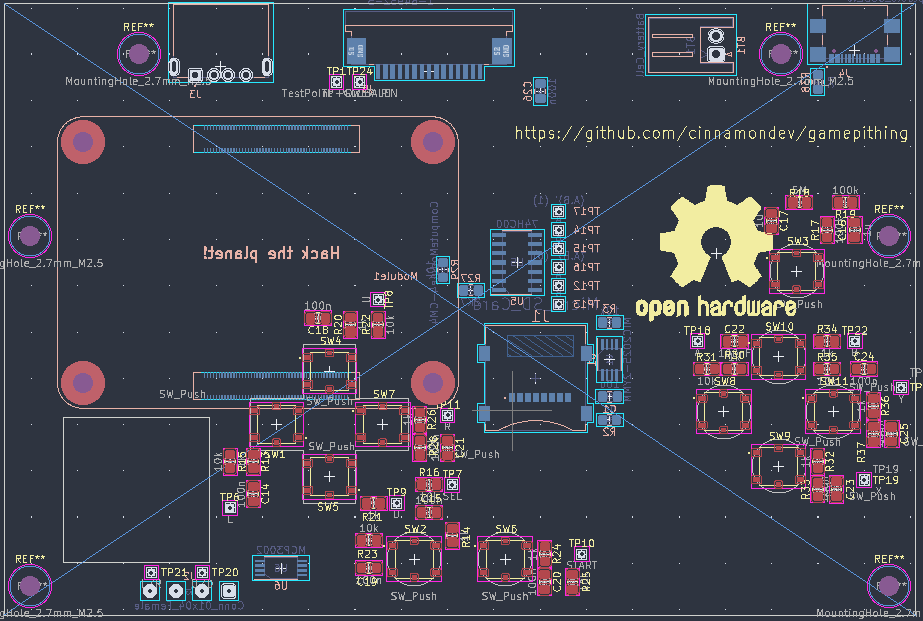

Development log - Pie Handheld
Handheld device powered by the Compute Module 4. To be finished, parts are on backorder, with a custom shell being designed (3d printed)
Table of contents:

Github
Handheld device powered by the Compute Module 4. To be finished, parts are on backorder, with a custom shell being designed (3d printed)
Table of contents:
Initial idea: CM4 carrier connected to a screen in a GBA SP shell.
Issues with initial idea:
New idea: CM4 carrier connected to a screen in a custom, 3d printed shell. Screen is on a slider mechanism to reveal gamepad/accessory pad. Magnets used to lock screen in desired positions.
Issues with new idea


(Images of previous casing designs, with issues and changes. There were some different minor revisions between that do not need mentioning.)
Initial design featured dovetail slides in the plastic, with very little tolerance, meaning lots of post processing was required in order to get any sort of functionality.
No tracks on the edge were made either, allowing for the head 'screen' unit to move side-to-side along the fixed post, causing it to catch, preventing the sliding of the 2 parts
The positioning in the initial state of the cable entry point on the screen would've also meant that the ribbon cable connecting the screen to the mainboard would be allowed to catch/pinch when in a closed state, causing potentially damage over time.
(No bottom part was printed in this revision).
Major changes: Additional thickness added to screen to accomodate real display (DFRobot DFR0550). New entry point for ribbon cable
Part was not developed past this due to some issues with the lower screw holes printing incorrectly, insufficent distance for the counterbored screw hole without the hole collapsing somewhat.
Parts were also still, too high tolerances (screen needs additional room to prevent ribbon being pinched, magnet diameter too exact to accomodate tolerances in manufacturing...
This revision was a major redesign. Most parts were remade with new tolerances in mind and the additional side tracks were added to stop the screen moving side-to-side and catching. Screen fits in this one! Bottom part was also printed in this revision.
Major issues found later: The screen cable is still likely to be stressed due to the bends it has to take to connect to the main board, and as it slides it will be frequently bent in many directions. In the next revision this should be accomodated for. The screen brightness control is also hard to access (small hole)
Semi-redesigned... ish. The part was resized to accomodate for battery choices and new parts (bottom of the base component) has now been designed. An adaptor board has been designed to prevent stress on the cable in the screen component (see above), which will hopefully prevent most stress situations.
This one is to be printed (ran out of PLA :( )
Newest design (from 11/04/22) will reflect component placement decisions. Some parts like the cable will be in slightly different positions to accomodate the place on the PCB preventing stress by creating bends etc...


A lot of components seem to be out of stock or backordered, so part choices were limited. See Figure 1. for basic block diagram
This is the first project I'm designing using professional EDA software, and I had some to learn before making the second revision of the board (first revision was for GBASP Shell). I found between revisions reading on some advice on PCB design was helpful. David L. Jone's 'PCB Design' document was particularly helpful. Using this, I stuck to a 50thou grid in my schematic, and carrying forward 50/100thou grids when it comes to PCB design.
Work In progress (check later)
Download the repository from github: Download as ZIP or use the git client. (git required)
git clone https://www.github.com/cinnamondev/gamepithing
Kicad Version 6+ is required.
Note: The Fusion 360 files are not yet available because they are still being actively worked on and I don't want to bother with exporting and importing and all that fuss. I will include them in Github releases of Gerbers etc when the design is 'ready for hackery'
Feel free to improve! If you are merging to this repository, please state what has been changed and why. Contributions are always welcome!
Licensed under CERN Open Hardware Licence V2 - Strongly Reciprocal.


{kind=link}